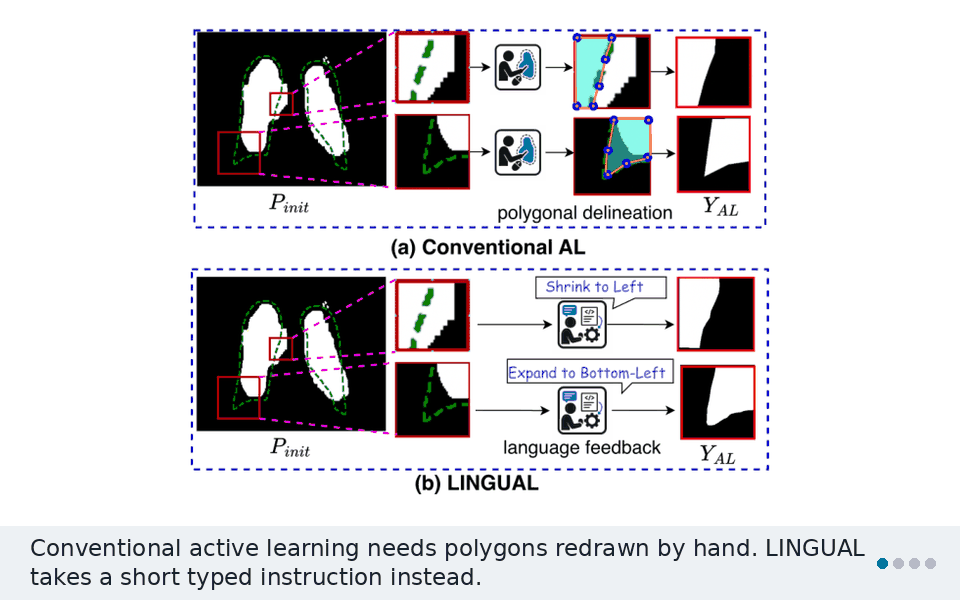
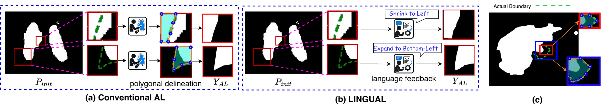
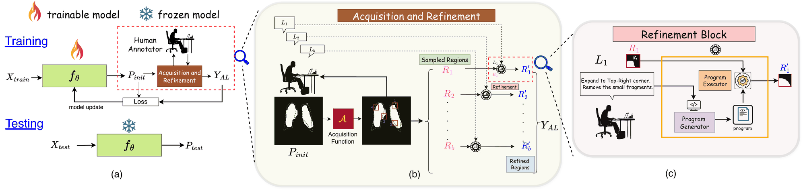
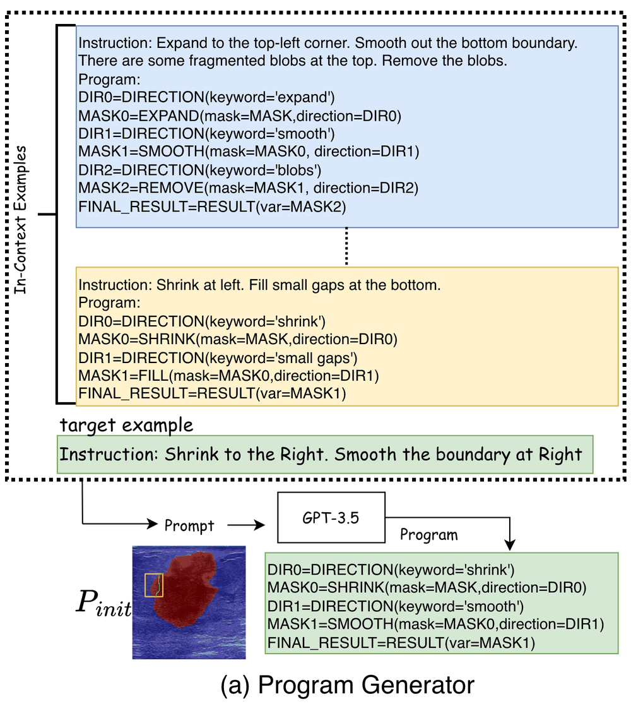
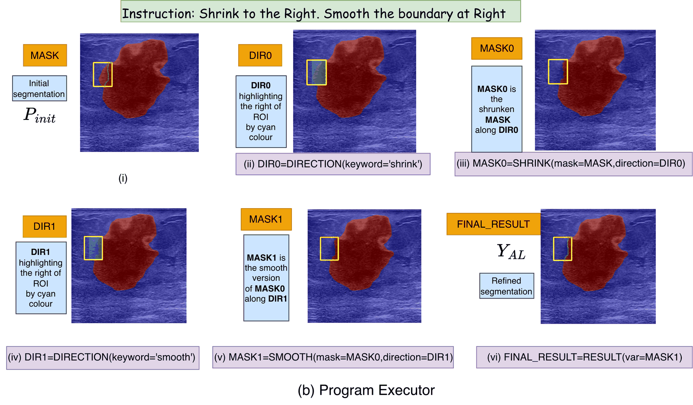
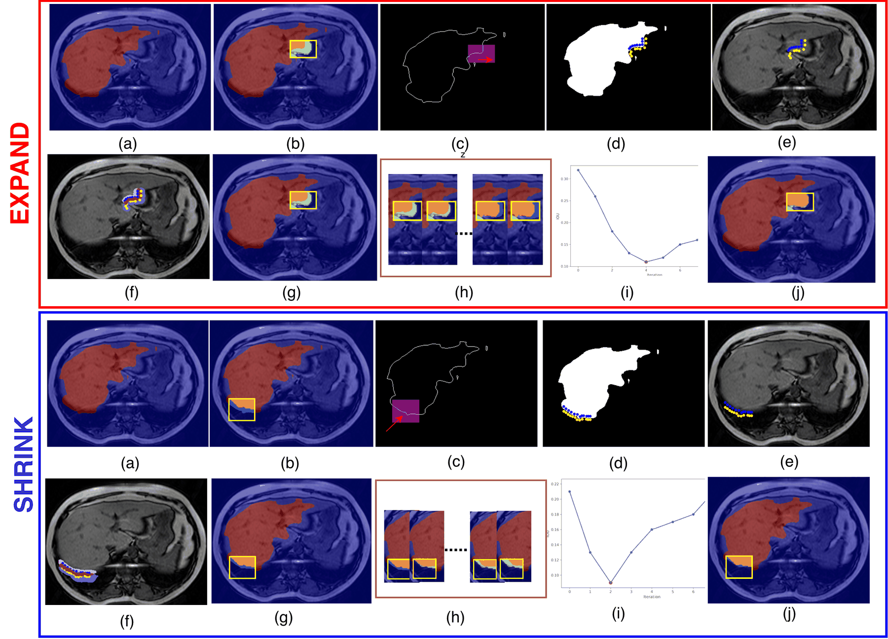
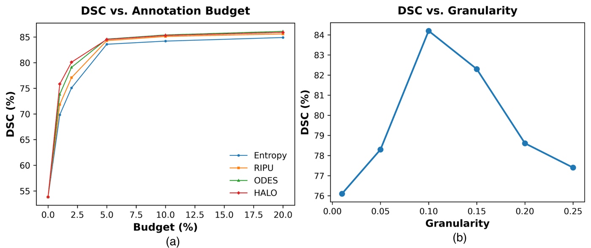

LINGUAL
Language-INtegrated GUidance in Active Learning for Medical Image Segmentation
1University of California, Riverside 2Samsung Research America

Drawing an exact boundary around every uncertain region is slow. LINGUAL lets the annotator state what is wrong instead, such as “Expand to bottom-right”. An LLM turns that sentence into a program, and the program fixes the mask with no further human input. Accuracy stays close to manual drawing, and estimated annotation time drops by about 25%.
The problem
Active learning (AL) asks a human to label only the most useful regions of an image. Those regions still need dense pixel labels. An annotator usually places polygon vertices one by one along the boundary, and medical boundaries are often irregular and complex.
Existing options each fall short:
- Polygon delineation is precise, but the cost grows with the region. A larger region has a longer boundary, so it needs more vertices.
- Superpixel AL needs only one class label per superpixel, so nothing is drawn. But superpixels can cross true object boundaries. A superpixel that covers both organ and background still gets one label, which adds label noise.

This is the key idea. “Expand to bottom-right” takes the same effort for a small region and a large one, within a reasonable size limit. So human effort stays nearly constant as regions grow.
How LINGUAL works
LINGUAL runs inside active domain adaptation. A model pretrained on a source domain is adapted to a target domain over several rounds, under a fixed annotation budget per image. This setting fits well because EXPAND and SHRINK refine boundaries that the source model already predicts. A model trained from scratch has only noisy early predictions to refine.

1Acquisition: pick the uncertain regions
An acquisition function ranks candidate regions by uncertainty and keeps as many as the budget allows. LINGUAL does not depend on one choice. The paper tests it with Entropy, RIPU, ODES, and HALO.
2Language feedback: state the correction
The annotator looks at a region and names the operation and its direction. No pixel interaction is needed. One region can take several operations at once, for example “Expand at the top-right, remove the fragments at the bottom, and smooth the boundary.”
3Program generation: turn words into code
GPT-3.5 receives hand-written examples of instructions paired with programs. It then writes a program for the new instruction, using in-context learning. For example:
Instruction: Shrink to the Right. Smooth the boundary at Right
DIR0 = DIRECTION(keyword='shrink')
MASK0 = SHRINK(mask=MASK, direction=DIR0)
DIR1 = DIRECTION(keyword='smooth')
MASK1 = SMOOTH(mask=MASK0, direction=DIR1)
FINAL_RESULT = RESULT(var=MASK1)
4Program execution: fix the mask
Seven correction modules cover the errors that appear inside a region. Two utility modules, DIRECTION and RESULT, support them.
| Error in the region | Module | Example instruction |
|---|---|---|
| Under-segmentation | EXPAND | Expand to right |
| Over-segmentation | SHRINK | Shrink at top-left |
| Spurious fragments | REMOVE | Remove the small fragments |
| Internal holes | FILL | Fill small gaps at the bottom |
| Jagged edges | SMOOTH | Smooth the boundary at right |
| Whole region is object | FOREGROUND | Entire region foreground |
| Whole region is not object | BACKGROUND | Entire region background |

5EXPAND and SHRINK: find where to stop
An instruction like “Expand to right” gives a direction but no distance. LINGUAL finds the distance with dual-sided boundary probing:
- Sample seeds. Pick seed points just inside and just outside the predicted boundary, along the requested direction.
- Grow regions. GraCo, a granularity-controllable segmentation model, groups similar pixels around each seed. This gives an inside region Ain and an outside region Aout. The algorithm can use any point-to-region function in place of GraCo.
- Read the overlap. If both seed sets lie in the same organ, the boundary is still misplaced, so Ain and Aout overlap a lot. If they lie on opposite sides of the true boundary, they barely overlap.
- Update the mask. EXPAND adds Ain ∩ Aout to the mask. SHRINK removes it. Then the steps repeat.
- Stop at the best iteration. The overlap score is ηt = |Ain ∩ Aout| / |Ain ∪ Aout|. LINGUAL keeps the iteration with the lowest ηt. In the figure below, that is iteration 4 for EXPAND and iteration 2 for SHRINK.
GraCo runs at a low granularity (g = 0.1), so each iteration makes a small change. It works like a small step size in optimization and lowers the risk of over-correction. If no correction improves on the input, LINGUAL keeps the original mask.

6Update: adapt the model
The refined regions replace the sampled regions in the prediction map. The model is then updated with a supervised loss between its initial prediction and this refined map, plus any unsupervised loss, and the next round begins. After the last round, the adapted model is frozen for inference.
How feedback is generated in the experiments
To keep runs reproducible on public datasets, the feedback is generated from ground truth, which is standard practice in AL evaluation. It follows three stages:
- Find the operation. Compare the prediction and ground truth inside the region. If false negatives dominate, choose EXPAND. If false positives dominate, choose SHRINK.
- Find the direction. Map the vector from the boundary centroid to the error centroid onto one of eight directions.
- Write the sentence. An LLM turns a keyword pair like “Expand top-left” into a natural instruction.
Ground truth is read only inside selected regions, and only to decide the operation and direction. The Program Generator and Executor never see it. The baselines use the dense pixel labels of the same regions, so LINGUAL works under much weaker supervision.
Results
LINGUAL was tested on three domain shifts across three imaging types:
- MRI: CHAOS T1, in-phase to out-of-phase (liver, both kidneys, spleen).
- Ultrasound: breast tumors, BUSI to UDIAT.
- X-ray: lungs, Montgomery to Shenzhen.
The segmentation model is DeepLabv3+. Patch-based methods use a 5% area budget, and superpixel methods use a 25-superpixel budget.
Against patch-based AL
| Method | IP→OOP | BUSI→UDIAT | Mont.→Shen. |
|---|---|---|---|
| Source model | 53.8 | 66.4 | 82.6 |
| Random selection | 65.3±4.2 | 67.1±5.2 | 87.2±2.6 |
| Fully supervised | 87.2±0.4 | 81.1±0.3 | 95.2±1.2 |
| Entropy (GT ROI) | 85.5±0.5 | 79.2±0.9 | 94.9±0.4 |
| Entropy (Poly) | 84.3±0.6 | 78.2±1.1 | 94.3±0.7 |
| Entropy + LINGUAL | 83.2±0.6 | 77.9±0.9 | 93.5±0.5 |
| RIPU (GT ROI) | 85.9±0.5 | 78.5±1.4 | 94.8±0.4 |
| RIPU (Poly) | 84.9±0.8 | 77.4±1.9 | 94.3±0.3 |
| RIPU + LINGUAL | 84.1±0.5 | 77.7±1.3 | 93.7±0.3 |
| ODES (GT ROI) | 86.4±0.5 | 78.5±1.1 | 94.6±0.3 |
| ODES (Poly) | 85.6±0.7 | 78.2±0.8 | 93.8±0.4 |
| ODES + LINGUAL | 84.2±0.8 | 78.1±0.8 | 93.6±0.2 |
| HALO (GT ROI) | 86.3±0.4 | 79.7±0.4 | 95.1±0.2 |
| HALO (Poly) | 85.4±0.7 | 78.6±0.8 | 94.3±0.3 |
| HALO + LINGUAL | 84.3±0.6 | 78.5±0.7 | 94.1±0.2 |
| RIPU ROI + MedSAM | 81.9±1.1 | 76.9±1.5 | 91.8±0.6 |
Dice scores (%). IP→OOP is averaged over the four abdominal structures. GT ROI uses ground truth directly inside each region. Poly simulates polygon delineation from ground truth. Each LINGUAL row shares the regions of its baseline. The paper also reports HD95 and ASSD.
Both GT ROI and Poly get pixel-level supervision, while LINGUAL gets only language feedback. Even so, the gap is small. On the same RIPU regions, LINGUAL also beats MedSAM on Dice in all three shifts.
Against superpixel-based AL
| Method | IP→OOP | BUSI→UDIAT | Mont.→Shen. |
|---|---|---|---|
| ASAL | 79.4±0.7 | 76.6±1.2 | 92.5±0.7 |
| ASAL + LINGUAL | 80.5±0.9 | 77.4±0.5 | 93.6±0.5 |
| MulActSeg | 78.1±1.3 | 74.1±1.5 | 91.3±1.2 |
| MulActSeg + LINGUAL | 81.1±0.6 | 76.3±0.7 | 93.3±0.9 |
| RSAL | 75.9±0.7 | 75.2±0.6 | 92.3±0.7 |
| RSAL + LINGUAL | 79.2±0.7 | 77.5±0.7 | 93.4±0.5 |
Dice scores (%), 25-superpixel budget.
Adding LINGUAL improves all three methods on all three shifts. Its iterative corrections move toward the true boundary, instead of staying inside a fixed superpixel that may have leaked across it.
Estimated annotation time
Time is estimated from published benchmarks over each full dataset:
- Polygon delineation: vertices are simulated with the Douglas-Peucker algorithm, at 5.55 seconds per vertex.
- LINGUAL: about 4 seconds per region to decide the correction, plus speaking time at 90 words per minute, plus the automatic program generation and execution time.
| Shift | Polygon | LINGUAL human | LINGUAL auto | LINGUAL total | Saved |
|---|---|---|---|---|---|
| BUSI→UDIAT | 13.79 | 7.90 | 1.78 | 9.68 | 29.80% |
| IP→OOP | 42.90 | 29.98 | 3.49 | 33.47 | 21.98% |
| Mont.→Shen. | 34.90 | 23.90 | 2.61 | 26.51 | 24.04% |
All values are estimates, in hours. Human is the time to decide and speak. Auto is program generation and execution. Saved compares the Polygon and LINGUAL totals.
Larger regions, same effort
Doubling the region size while keeping the number of regions raises Dice. Manual effort stays comparable, because it depends mainly on the number of regions.
| Case | Region area | Number of regions | Manual effort | BUSI→UDIAT | IP→OOP |
|---|---|---|---|---|---|
| Baseline | 1× | 1× | 1× | 72.62 | 65.30 |
| Same total area | 2× | 0.5× | 0.5× | 69.29 | 62.34 |
| Same region count | 2× | 1× | 1× | 74.31 | 70.81 |
Dice scores (%). The baseline uses 2 regions per round and 3 active rounds.
Program Generator robustness
The Program Generator was tested on 688 paraphrased instructions, across all seven operations and eight directions. They include formal and informal wording, alternative vocabulary, and combined operations. Unparseable or incorrect instructions fall back to the original prediction.
| Operation | Samples | Parsed (%) | Correct (%) |
|---|---|---|---|
| EXPAND | 128 | 99.2 | 97.7 |
| SHRINK | 128 | 100.0 | 91.4 |
| SMOOTH | 80 | 100.0 | 97.5 |
| FILL | 80 | 100.0 | 98.75 |
| REMOVE | 80 | 100.0 | 98.75 |
| FOREGROUND | 16 | 100.0 | 100.0 |
| BACKGROUND | 16 | 100.0 | 100.0 |
| Multiple operations | 160 | 100.0 | 91.9 |
| Overall | 688 | 99.9 | 95.5 |
Budget and granularity

Limitations
- LINGUAL refines the source model’s predictions, so its efficiency depends on their quality. It still helps from poor starts: Dice rises from 53.8 to 84.1 on IP→OOP with RIPU.
- Corrections can be weaker in regions with mixed false positives and false negatives, branching, or disconnected structures.
- The results concern annotation effort and accuracy. Clinical acceptability for a specific task still needs validation with clinicians.
Code
The code is open source at github.com/ShazidAraf/LINGUAL. It needs Python 3.10, PyTorch 2.0.1, CUDA 11.8, one GPU, and an OpenAI API key for program generation.
git clone https://github.com/ShazidAraf/LINGUAL.git
cd LINGUAL
conda env create -f environment.yml
conda activate lingual
export OPENAI_API_KEY=<your-key>
python main.py --cfg configs/UDIAT.txt --method RIPUDownload the GraCo weights, add a source model checkpoint, and set your paths in the config file. The README has the details. Configs are included for all three domain shifts.
Citation
@inproceedings{islam2027lingual,
title = {LINGUAL: Language-INtegrated GUidance in Active Learning
for Medical Image Segmentation},
author = {Islam, Md Shazid and Bera, Shreyangshu and Paul, Sudipta and
Roy-Chowdhury, Amit},
booktitle = {Winter Conference on Applications of Computer Vision (WACV)},
year = {2027}
}* Sudipta Paul contributed in his personal capacity. The views expressed are his own and do not necessarily represent those of Samsung Electronics.